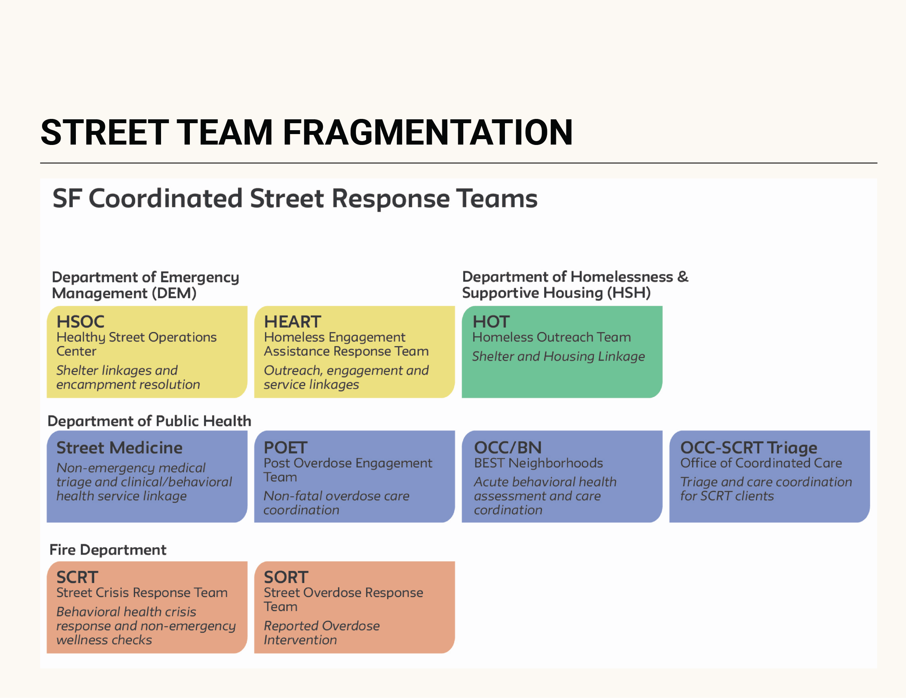
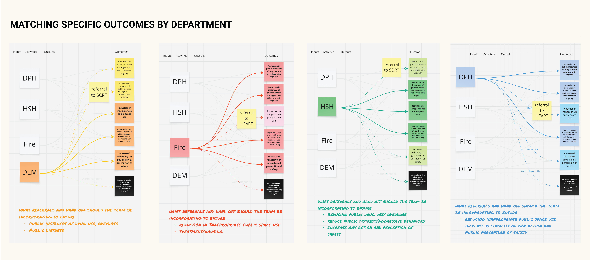
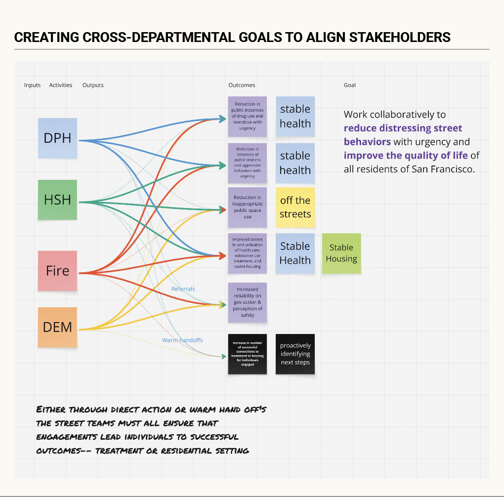
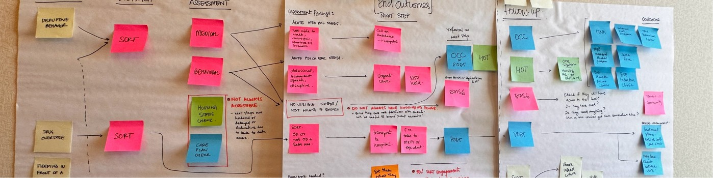
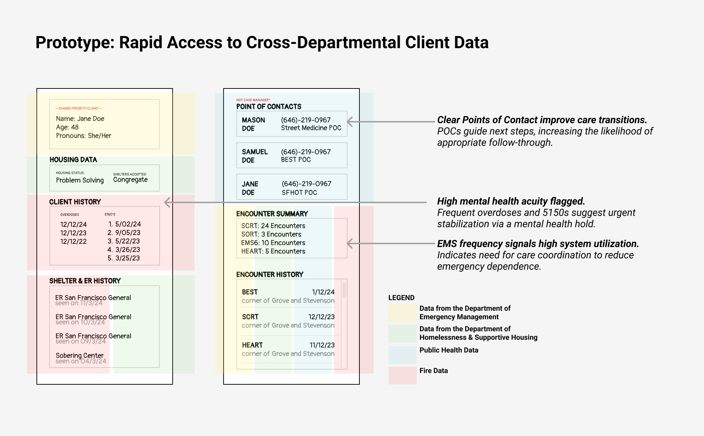
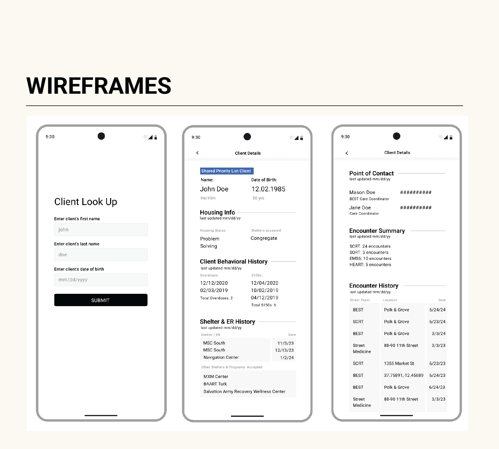
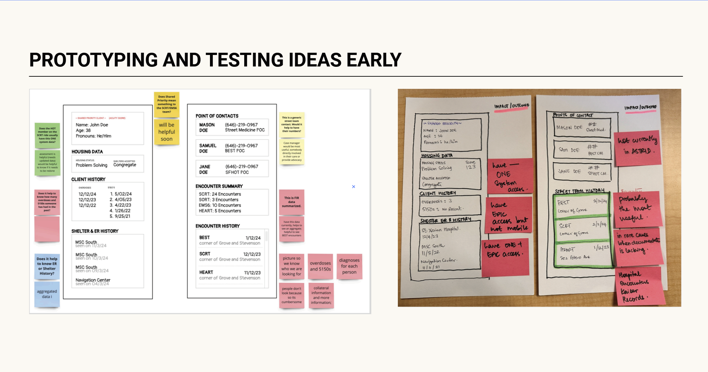
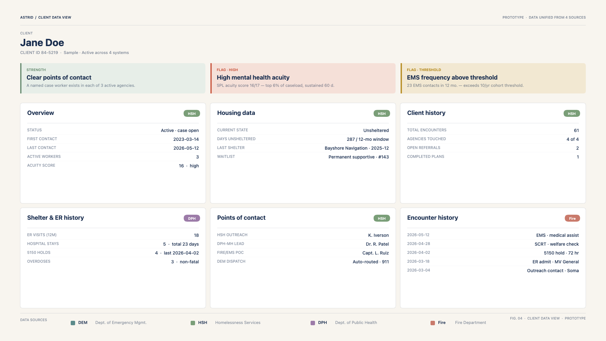
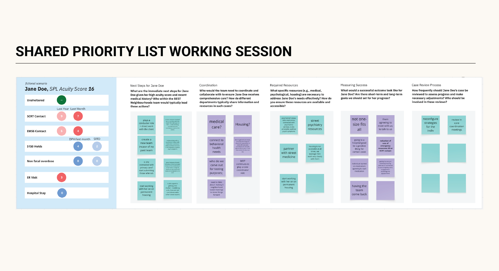
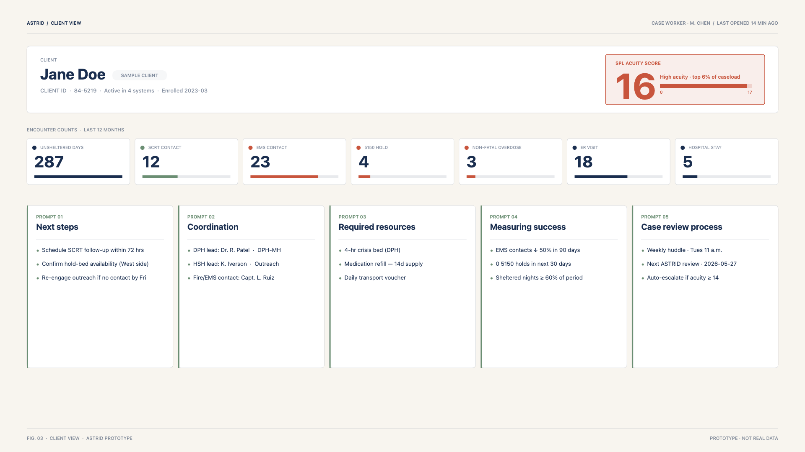

The problem
When I joined the innovation team in 2023, they were solving a data integration problem. As a service designer, I pushed my team to really think deeply about the problems we are solving, what data, when integrated, will meet the needs of the clients we serve. As we worked with the departments that deliver services to people experiencing homelessness, it became apparent that a shared view of client data would be helpful. But after 6 weeks of rigorous research through street team ride-alongs and care-coordination meetings, it was clear the city was grappling with a complex issue. Each department was trying its best to support client needs, but clients need cross-departmental resources, and no one owned the client outcomes across teams.
Data integration mattered, but we needed to first address where in the system the data would create the most leverage: which frontline workers, holding what information, would change client outcomes most directly.
Clients have complex health, housing, and resource needs and must navigate many eligibility criteria and resource-matching efforts to access services easily. Most high-need clients on the streets have very little ability to help themselves access these resources.
Departments struggled to find ways to prioritize clients, reserve resources for those who need extra support, and successfully help them get off the streets and into stable care or housing. This often left the most high-need clients on the streets.

Methods used
Mixed-method research
30+ ride-alongs across DPH (Department of Public Health), Fire, DEM (Department of Emergency Management), and HSH (Homelessness and Supportive Housing), plus 45+ interviews with field staff and leadership, surfaced the same pattern over and over. Wherever possible, I used existing open data to examine the service costs to the city and the systems within which these teams operated.
Ride-alongs mostly ended with homeless clients being left on the street for one of four reasons: staff weren't able to diagnose client need; need was diagnosed but the client wasn't eligible for available resources; the client was eligible but the resource wasn't available; or the resource was available but the client wouldn't take it.
Interviews with staff and department leaders revealed resource gaps across the city and the skewed way resource allocation operated in 2024.
Theory of change workshops
I was working with tough stakeholders who had to buy into taking on more work than regulation required of them. Departments aren't mandated to have oversight of handoffs or to take ownership of this process; it took a lot of convincing.
I designed and facilitated six workshops, each grounded in real client stories, with leaders from all four departments. The sessions produced the first unified street-response goal jointly held by DPH, Fire, DEM, and HSH. The sessions also helped us meet other department leaders and see their client struggles more clearly. The departments appreciated being able to share with one another and work with peers who sometimes face the same struggles with homeless individuals.
Prior coordination efforts had focused on housing placement (Coordinated Entry) or specific population segments; this was the first time a shared operational goal was defined across the street-response services themselves, with warm-handoff protocols and named ownership for the transitions nobody had been accountable for before.
Beyond establishing the top-line goal, I also created a logic model for our operations to map the inputs, activities, outputs, and outcomes by department to ensure they roll up to our top-line goal.


Service blueprint
A service blueprint, built with frontline staff, traced the client journey across four departments and named every owner-less handoff. The map turned an abstract coordination problem into something city leaders could see in front of them. I created these maps on walls with the city leaders so they felt ownership over the artifact and bought into using it. I also brought frontline staff into the Mayor's office to share rich stories about the struggles they face on the streets. The service blueprint helped us see the client drop-offs more clearly and worked as a starting point for us to really iterate on a future state together.

The map turned an abstract coordination problem into something city leaders could see in front of them with real client impact.
Working through legal barriers (not a method but a skill!)
Sharing client information between city departments runs into privacy laws: HIPAA, plus a federal rule that protects substance-use records. I drafted the first version of the legal agreement that would let departments share lawfully; the data lead and the City Attorney's office finalized it. The result is the Homeless Multidisciplinary Data Trust (HMDT), a one-time legal setup that future city projects can reuse instead of starting from scratch.
Working sessions to get staff using the data
Once we integrated the data, we made a real effort to ensure the teams doing this work had access and could use it effectively. A two-week working session in September 2024 brought together data stewards from across city departments to iterate on the integrated dataset in real time. The idea was to help the data analyst really start owning this dataset and using it to drive client impact.
It produced more than a dataset: it built working relationships between data leads across departments that subsequent MOI engagements continue to draw on.
Interventions
We built three distinct artifacts: an outreach worker app, the policy maker dashboard, and the Shared Priority List.
The outreach worker app
The outreach worker app allowed city staff to see integrated data, client history, client resource eligibility, and who had worked with the client in the past, all in the field. The assumption was that this would save them a ton of time and help them act quickly.

While we iterated and tested the solution, it became clear that frontline workers, although benefiting from having this information, have very little decision-making capacity in the field.
Decisions were made at the managerial level, and changing that culture required us to think beyond an app. So we shifted the app's main users to the team managers and created a client data dashboard instead, allowing senior leaders to see clients and make decisions when frontline workers called them.


Policy maker tool
This high-level dashboard gave the Mayor's office a more detailed picture of operations across departments: what activities the teams were running, what outcomes those activities produced, and how to effectively measure impact. The tool is a work in progress and received a lot of pushback.

The Shared Priority List
The Shared Priority List is the working list of clients with the highest cross-departmental encounters and the most complex resource and health needs: people street teams have seen repeatedly for six months or longer with no visible change in their situation. The list let four departments agree on who needed coordinated care most, ending the recurring debate over whose clients mattered most.

I designed and ran a future-state operations workshop with frontline workers in the room, asking questions like "what would allow you to get clients successfully off the streets and into care or housing."
I ran care-coordination design workshops and helped the teams align on an operational flow. We also ran a test pilot for four months with 15 clients to iterate on the operations until we started seeing progress with these high-priority clients.
Before the Shared Priority List, coordination meetings ran long and open-ended. I added a structured template, five prompts (next steps, coordination, required resources, measuring success, case review process), so every weekly review covered the same ground for every client. The list also unlocked something that hadn't been possible before: custom-designed resource delivery for clients whose needs didn't fit standard pathways. It is now central to the Lurie Administration's Neighborhood Street Teams.

ASTRID is now the operational backbone of Mayor Lurie's Neighborhood Street Teams model, and was selected for the largest grant Bloomberg Philanthropies has ever awarded a city innovation office.
Outcomes
Across 15 of the highest-acuity clients in the pilot cohort, the integrated system did what seven disconnected ones could not.
The cohort was deliberately small: focused enough for frontline staff to give each client real attention, large enough for breakdowns to surface. Subsequent iterations of the Shared Priority List have extended this work beyond the pilot, and the data portal now integrates information across all seven city departments.
What ASTRID contributed: the cross-departmental coordination structures (warm-handoff protocols, named-owner assignments), the HMDT legal framework for data sharing, the integrated dataset and Shared Priority List methodology, and the operational dashboards now used across participating departments.
- ASTRID became the operational backbone of the Lurie Administration's Neighborhood Street Teams.
- Cited as foundational in Mayor Lurie's March 2025 Executive Directive on homelessness.
- Selected for a 3-year, $7M Bloomberg Philanthropies partnership.
Context
Stakeholders. Mayor's Office of Innovation, department chiefs, outreach workers and paramedics. Core partners: Public Health, Fire, Emergency Management, Homelessness and Supportive Housing — later joined by HSA (Human Services Agency), Police, and Public Works in ASTRID 2.0.
Funding. Bloomberg Philanthropies and Johns Hopkins University.
Scale. 16,000 unhoused San Franciscans served; 191 highest-acuity individuals identified. The pilot integrated 125,000 street encounters across four departments; ASTRID 2.0 now integrates data across all seven departments and 120+ users.
Timeline. 2023 – Present.